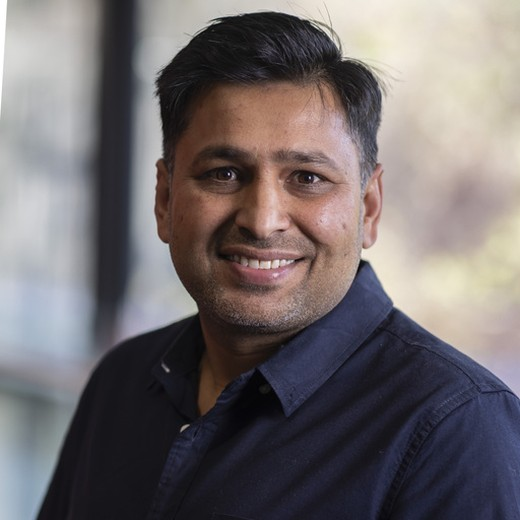
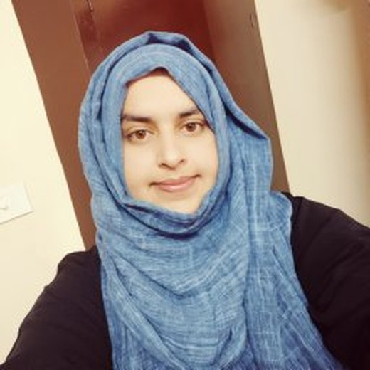

Move from visual explanations to internal, testable model mechanisms.
MICCAI 2026 Workshop
Beyond post-hoc XAI
Built for MICCAI
Outcome-oriented
Mechanistic Interpretability for Medical Foundation Models
A half-day MICCAI workshop focused on how medical foundation models compute, where they fail, and how mechanistic interpretability can make them more reliable for clinical use.
Grounded in medical imaging, multimodal clinical AI, and trustworthy deployment.
Connect analysis to validation, debugging, and safer intervention strategies.
How the workshop thinks about MedFMs
Inspect
Features, circuits, activations
Validate
Clinical alignment and faithfulness
Intervene
Debugging, steering, monitoring
Overview
Why this workshop matters now
Medical foundation models are becoming central to imaging and multimodal clinical AI, but high-stakes deployment needs more than saliency maps or attention plots. MI4MedFM centers mechanistic interpretability: understanding the internal computations that generate model behavior.
The workshop creates a focused MICCAI forum for methods such as sparse autoencoders, circuit discovery, activation patching, causal tracing, steering, and weight-space analysis, while keeping the discussion tightly connected to clinical validity, robustness, and deployment safety.
Designed for MICCAI
A workshop page that reads like a MICCAI satellite event
The framing is intentionally aligned with MICCAI: focused scientific scope, clear community relevance, in-person exchange, and a strong regional fit for Abu Dhabi.
MICCAI 2026 context
Mechanistic interpretability positioned as a high-value MICCAI discussion topic
MI4MedFM is framed as a focused satellite-event workshop for the MICCAI audience, centered on medical imaging and multimodal clinical AI rather than generic foundation-model discussion.
Specific topic focus
Engaging in-person discussion
Medical imaging + multimodality
Trustworthy clinical deployment
Presented as a MICCAI 2026 workshop in Abu Dhabi, with workshop activity aligned to the satellite-event days on Oct 4 or Oct 8.
The content emphasizes relevance to MICCAI, scientific objectives, organization quality, review rigor, and regional engagement.
The page highlights local presence and Middle East relevance in a light, polished way rather than overloading the proposal detail.
Workshop focus
Four core pillars explain what attendees will actually get
The workshop is presented through a small number of concrete pillars so visitors quickly understand the scientific value without reading the full proposal.
Pillar 1
Inspect internal model mechanisms
Understand what features, subcircuits, and latent representations medical foundation models rely on when producing clinically relevant behavior.
- Sparse autoencoders and feature discovery
- Circuit analysis and causal tracing
- Activation-level understanding of decision pathways
Topics
Representative directions in scope
The content is trimmed to the main themes visitors need to understand quickly, while still reflecting the workshop’s technical depth.
Features, circuits, and internal representations
Methods that uncover what medical models internally encode and how those computations are organized.
Clinically meaningful validation
Tests that determine whether discovered mechanisms align with trusted medical concepts and downstream behavior.
Spurious cues, shortcuts, and hallucinations
Mechanistic debugging for brittle reasoning, domain shift, bias, and unreliable multimodal outputs.
Editing, steering, and control
Using mechanism-level insight to improve robustness, correct behavior, and reduce harmful failure modes.
Monitoring unsafe states in practice
Interpretability-guided monitoring and uncertainty-aware signals for safer clinical deployment settings.
Scalable, usable open infrastructure
Frameworks and workflows that make mechanistic analysis practical for medical imaging and multimodal MedFMs.
Program
A compact half-day workshop with clear flow
The structure is designed to feel energetic and discussion-driven: keynote depth, paper exposure, poster interaction, and focused closing synthesis.
One invited talk to frame trustworthy medical AI through the lens of mechanism and evidence.
Selected papers presented in concise oral sessions built for cross-disciplinary accessibility.
Poster-first visibility, direct discussion, and opportunities for clinicians and ML researchers to connect.
A short final discussion on open problems, benchmarks, and next steps for the field.
Opening and framing
Set the agenda, the scientific motivation, and the workshop goals for the MICCAI audience.
Keynote session
One flagship invited talk focused on trustworthy medical AI, interpretability, and clinical reliability.
Networking break
Built-in time for community connection and discussion across research and clinical backgrounds.
Oral session
Curated short talks presenting methods, evaluations, and lessons for medical foundation models.
Poster session
Poster and demo interaction, feedback, and deeper discussion around methods and applications.
Closing discussion
Open questions, community priorities, and next steps for mechanistic interpretability in medical AI.
Keynote speaker
Invited speaker
A centered single-speaker layout keeps the section balanced and visually clean.
Keynote Speaker
Karim Lekadir
Trustworthy medical AI researcher
The speaker section is kept concise and visually weighted toward credibility, expertise, and fit with the workshop’s focus on robustness, fairness, uncertainty, and clinical reliability.
Organizers
Faculty and researcher team with strong UAE presence
The organizer presentation is simplified for the website: a strong faculty base plus early-career researchers, with local MICCAI relevance clearly visible.
Faculty
Mohammad Yaqub
Associate Professor
MBZUAI
Faculty
Muhammad Haris
Assistant Professor
MBZUAI
Faculty
Muhammad Bilal
Professor
Birmingham City University
Faculty
Dwarikanath Mahapatra
Assistant Professor
Khalifa University
Faculty
Imran Razzak
Associate Professor
MBZUAI
Faculty
Yutong Xie
Assistant Professor
MBZUAI
Researcher
Rishabh Lalla
Ph.D. Student
MBZUAI
Researcher
Ufaq Khan
Ph.D. Student
MBZUAI
Researcher
Umair Nawaz
Ph.D. Student
MBZUAI
Researcher
Namrah Rehman
Ph.D. Student
MBZUAI
Researcher
Satyajit Kishore Tourani
Ph.D. Student
MBZUAI
Researcher
Tausifa Jan Saleem
Postdoctoral Associate
MBZUAI
Submission
Clear, concise submission and review overview
The website keeps only the details visitors need quickly: contribution types, review standards, and what accepted authors can expect.
Proceedings track
Original work intended for the MICCAI satellite-events LNCS proceedings workflow.
Non-archival track
Extended abstracts, previously published work, or work under review elsewhere.
Rigorous peer review with clear presentation outcomes
- Double-blind review with conflict-of-interest safeguards
- Evaluation on relevance, rigor, clarity, validation, and reproducibility
- Poster presentation for accepted work, with selected oral highlights
Ready to publish
A clean live-ready one-page workshop site
This version is simplified, aligned, visually stronger, and focused on the message a MICCAI visitor should understand within a quick scan.